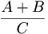
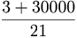
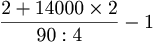

De: La Frikipedia, la enciclopedia extremadamente seria.
De: La Frikipedia, la enciclopedia extremadamente seria. De: La Frikipedia, la enciclopedia extremadamente seria.


El porcentaje de fealdad es el porcentaje porcentajoso de lo feo que es un/a mendo/a. Veremos si eres un normalillo o eres como los infelices tios de abajo. Pobre madre, que El Monstruo de Espagueti Volador se compadezca de ti y tu puta vida estos tios.
Por qué coño te lo tengo que repetir? Joder!! Para ver si eres feo como la mierda, pues.
Para sacar el porcentaje de fealdad (léase Porcentaje de fealdad) se debe realizar la siguiente fórmula.
Una vez se han conseguido estos datos, realizar la siguiente operación matamatica:

Ejemplos:
1. 
En este ejemplo se analiza un sujeto con 3 centimetros o kilometros o años luz (no afecta al resultado final) de distancia entre las cejas. Que tiene 30000 unidades capilares descolocadas y que posee 21 centimetros o kilometros o años luz (no afecta al resultado final)de la pierna central.
2. 
Esta hembra humana posee una 90 de pecho, la distancia interceja es de 2 centimetros o kilometros o años luz (no afecta al resultado final). Y tiene 14000 pelos fuera de su lugar predeterminado o default. Además, esta especímena es originaria de Canarias, porlo que se le resta 1 a la fracción entera.
MATATE, QUE MAS TE QUEDA, NO VAS A TENER SEXO, NI AUNQUE LE PAGUES A UNA PUTA
Ejemplo de Canción a una novia
Autor(es):